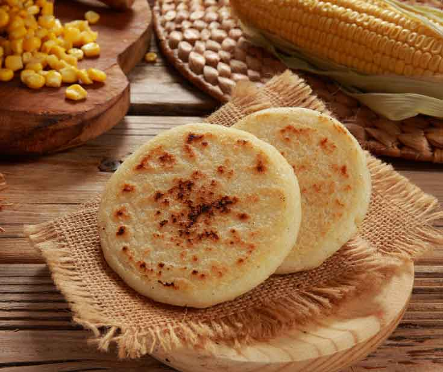
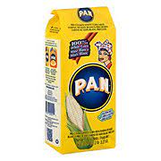
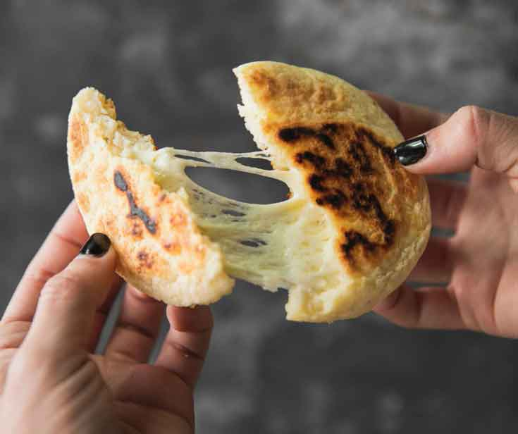

<div class="container" style="width: 80%;margin-top: 64px;max-width: 1080px;margin-bottom: 100px;">
        <div class="row">
                <div class="col col-12 col-md-9">
                        <div class="artcont">
                                <h1 class="articletitle">PLANTAINS! A STAPLE FOOD IN LATIN AMERICA’S COUSINE</h1><span
                                        class="artdata">by admin | Jul 14, 2022 | Uncategorized | 0 comments</span>

                                <p><span style="font-size: 14px;">Arepas, a traditional dish from Colombia and
                                                Venezuela, are round
                                                savory corn cakes made with a precooked corn flour known as Masarepa.
                                                They are very easy to
                                                make and can be served for breakfast, as an afternoon snack or a light
                                                dinner. Most
                                                households used to mill their own corn to make the Masarepa; nowadays
                                                they buy the arepa
                                                flour.</span></p>
                                <p><span style="font-size: 14px;">Masarepa has a mild corn flavor, it’s naturally
                                                GLUTEN-FREE and
                                                it’s available to purchase in our store. We carry the most popular brand
                                                P.A.N. in the
                                                yellow and white corn varieties.</span></p>
                                <p>&nbsp;<span style="font-size: 14px;">While many Colombian households make arepas
                                                fresh every day,
                                                it is also possible to make a large batch and freeze them for up to a
                                                month. To freeze,
                                                place them in an airtight container with parchment paper in between to
                                                prevent them from
                                                sticking. Do not store the raw dough as it may ferment.</span></p>
                                <p>Now let’s check out a recipe to make delicious cheese Arepas:</p>
                                <p>&nbsp;<span style="font-size: 14px;">&nbsp;</span></p>
                                <p><strong>Ingredients:</strong></p>
                                <p><span style="font-size: 14px;"></span><span style="font-size: 14px;">• 2 cups P.A.N.
                                                Masarepa</span></p>
                                <p><span style="font-size: 14px;"></span></p>
                                <p><span style="font-size: 14px;"></span><span style="font-size: 14px;">• 1 cup water,
                                                plus more as necessary</span></p>
                                <p><span style="font-size: 14px;">• 1 teaspoon vegetable oil (optional to make them
                                                tender)</span></p>
                                <p><span style="font-size: 14px;">• Kosher salt</span></p>
                                <p><span style="font-size: 14px;">• 1/2-pound white cheese, Queso Blanco – sliced or
                                                grated</span></p>
                                <p><span style="font-size: 14px;">• 2 teaspoons butter</span></p>
                                <p><strong style="font-size: 14px;">Serving:</strong><span style="font-size: 14px;"> 4
                                                Arepas</span>
                                </p>
                                <p><strong style="font-size: 14px;">Total time:</strong><span style="font-size: 14px;">
                                                30
                                                min</span></p>
                                <p><strong style="font-size: 14px;">Nutrition Facts per serving:</strong><span
                                                style="font-size: 14px;">
                                                Calories 269/ Fat 7g / Carbs 47g/ Protein 7g</span></p>
                                <p><strong style="font-size: 14px;">Directions:</strong><span
                                                style="font-size: 14px;"></span>
                                </p>
                                <ol>
                                        <li><span style="font-size: 14px;">Preheat oven to 325°F. Combine Masarepa,
                                                        water, and vegetable
                                                        oil (if using) in a medium bowl and mix with hands until a dough
                                                        is formed. Take a small
                                                        amount and flatten it between your palms. If the edges crack,
                                                        knead in more water, 1
                                                        tablespoon at a time until dough is smooth but not sticky.
                                                        Season dough to taste with
                                                        salt, then cover and set aside for 5 minutes.</span></li>
                                        <li>ivide dough into 8 even pieces and roll into balls. Use a cutting board with
                                                a sheet of
                                                plastic wrap or parchment paper on top of it and flatten each ball down
                                                and make them round
                                                about 5 inches in diameter and 1/4-inch thick.</li>
                                        <li>lace 1/4 of cheese into center of one disk, leaving a 1/2-inch gap all
                                                around.</li>
                                        <li>lace a second disk on top and carefully seal the edges all around.</li>
                                        <li>se one hand to shape the edges of the arepa so that it is an even round
                                                disk.</li>
                                        <li>elt butter in a 12-inch non-stick skillet over medium-low heat. Add arepas
                                                and cook,
                                                rotating them occasionally, until first side gets some spots, and a dry
                                                crust has formed,
                                                about 5 minutes. Flip arepas and cook on second side until a dry crust
                                                has formed, about 5
                                                minutes longer. Transfer to a baking sheet and place in oven until
                                                heated through and cheese
                                                is melted, about 10 minutes.</li>
                                        <li>erve and enjoy!!</li>
                                </ol>
                                <p><em style="color: #333333; font-size: 18px;"><strong>Note: Arepas can also be cooked
                                                        on a grill
                                                        over low heat</strong></em></p>

                                

                                <p><strong style="font-size: 14px;">Don’t forget to stop by Riverview Fresh Market and
                                                include Masarepa
                                                and Queso Blanco (white cheese) in your shopping list to prepare
                                                delicious arepas at home. Be
                                                creative and fill them with other ingredients or your favorite
                                                protein!</strong><span style="font-size: 14px;">&nbsp;</span><strong
                                                style="font-size: 14px;"><a
                                                        href="https://riverviewfreshmarkets.mybcard.net/contact-2/#map">Visit
                                                        Us!</a></strong></p>


                        </div>
                </div>
                <div class="col col-12 col-md-3 recentcol">
                        <h1>Recent post</h1>
                        <app-menuarticles></app-menuarticles>

                </div>
        </div>
</div>